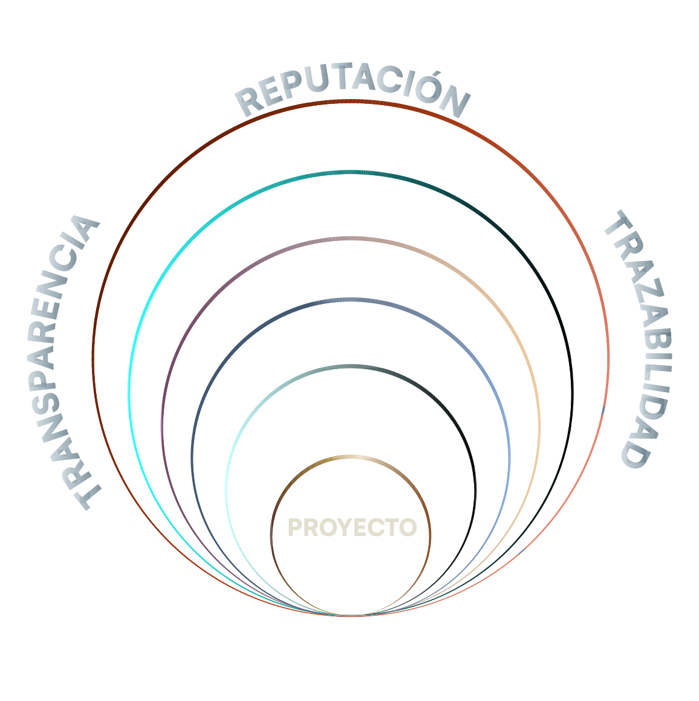
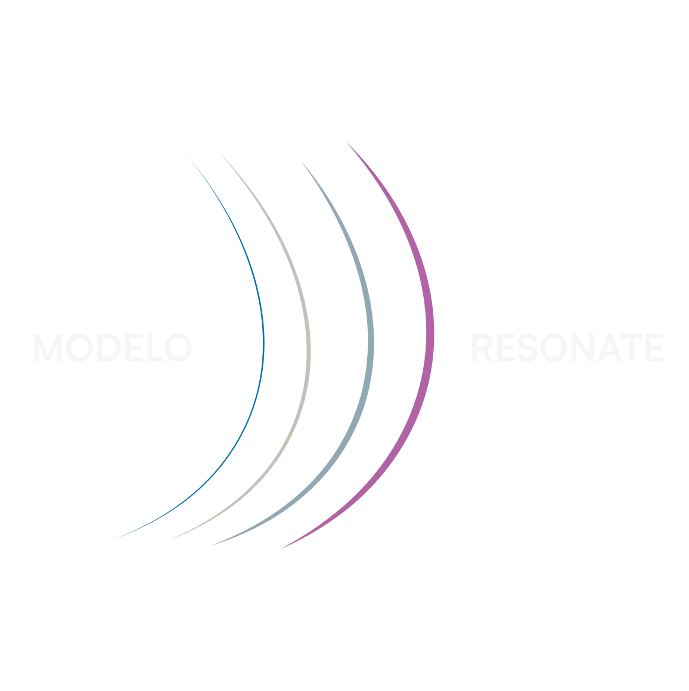
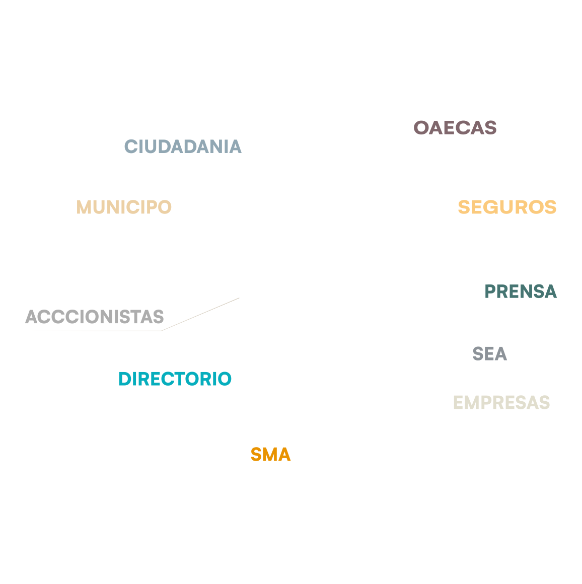
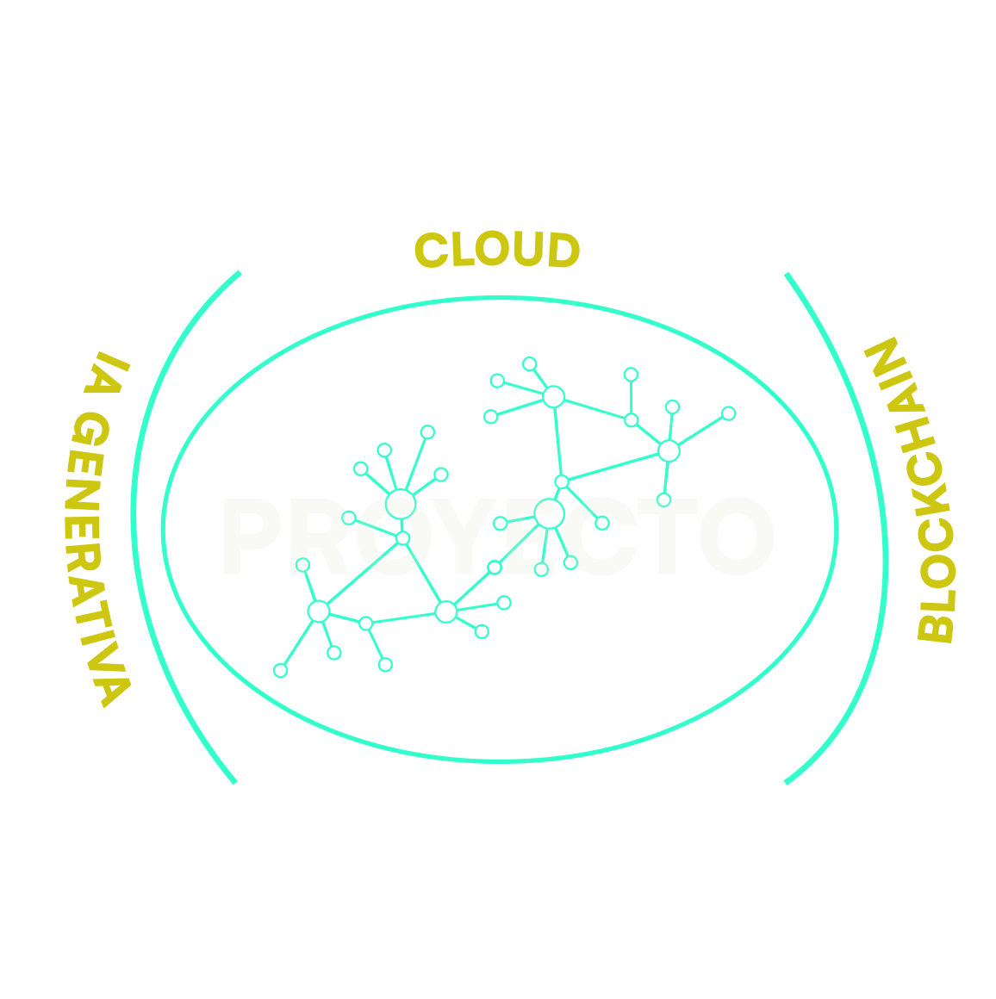

"Consultoría de vanguardia para el presente y futuro de su proyecto."
Diseñamos soluciones personalizadas (Ex-Ante) en medioambiente, compliance, sostenibilidad y comunicación — respaldadas por un equipo profesional que hace trazable e integra cada decisión, de manera transparente, confidencial y cibersegura. (Ex-Post)
Anticipa / Integra / Protege
Historia
SOARBLUE nació en 2015 con una convicción clara: los proyectos de inversión fracasan cuando la información llega tarde, fragmentada o de forma desigual a sus distintos actores. En 2016, esta visión se fortaleció con la adjudicación de un proyecto CORFO patrocinado por INCUBA UC
Nuestro nombre resume esa propuesta de valor. SOAR —Servicio de Observación Ambiental Remoto— expresa nuestro origen en el uso de tecnologías de análisis espacial y en la aplicación pionera de fotografía aérea y terrestre profesional para evaluar, monitorear y comunicar proyectos complejos. Blue incorpora la dimensión sostenible, comunicacional y reputacional que transforma esa capacidad técnica en valor para el territorio y las compañías.
Esta visión se sustenta en experiencia acumulada en empresas privadas, servicios públicos como Directemar y el SEA, docencia y formación especializada. Con el tiempo, ese recorrido dio origen a tres modelos metodológicos conceptuales; DERMIS, RESONATE y RIZOMA.
Hoy, SOARBLUE es una arquitectura de gestión que articula disciplinas, anticipa riesgos y protege proyectos en cada etapa de su ciclo de vida.
PROPÓSITO
"Que nuestros clientes nunca tengan que explicar lo que pudieron haber anticipado — y que cuando llegue un momento crítico, no estén solos."
MISIÓN
"Diseñar soluciones integradas de gestión ambiental, compliance, sostenibilidad y comunicación para que los proyectos de inversión cuenten con información trazable, verificable y anticipada en cada etapa de su ciclo de vida — protegiendo la inversión, el territorio y la reputación de quienes deciden."
VISIÓN
"Ser la consultora de referencia en Chile para proyectos de inversión de alta complejidad ambiental — reconocida por cambiar la forma en que los directorios anticipan los riesgos y toman decisiones antes de que el daño ocurra."
Servicios
MEDULARES
Aseguramos la viabilidad y continuidad operativa de su proyecto en todo su ciclo de vida: desde la fase de evaluación ambiental hasta la etapa de cierre.
Blindamos su operación y gobierno corporativo frente a los nuevos estándares de responsabilidad penal. Nuestro enfoque mitiga los riesgos de sanciones, protege la continuidad del negocio y resguarda directamente la responsabilidad legal de la empresa, sus directores y gerentes.
Integramos y articulamos las exigencias de sostenibilidad actuales, tanto para Grandes Empresas como para su cadena de suministro (PYMES). Nuestro objetivo es asegurar el cumplimiento regulatorio, mitigar riesgos financieros y posicionar a su empresa de forma competitiva frente a inversionistas y autoridades.
Gestionamos la comunicación estratégica de su proyecto como un activo para la viabilidad del negocio. Al traducir información técnica compleja en mensajes claros para comunidades, autoridades y stakeholders, disminuimos asimetrías, protegemos la licencia social para operar y aseguramos un entorno favorable para el desarrollo del proyecto.
CONTRAPESO
Contrapeso es un servicio de outsourcing estratégico y colaborativo de consultoría especializada, diseñado para ser contratado por proyecto en cualquiera de sus etapas.
estratégico diseñado para respaldar a los departamentos internos de medioambiente o compliance en proyectos de inversión, aportando una mirada experta e independiente.
Nos integramos a su equipo en cualquier etapa para prevenir contingencias y actuar como un puente transparente con los stakeholders.
Al eliminar asimetrías de información frente a directorios y comunidades, protegemos su reputación corporativa y garantizamos el activo clave para la viabilidad del proyecto: confianza.
POCKET estratégico diseñado para PYMES, proyectos de corta duración o de menor complejidad pero que requieren de una prestación de servicio a la medida. Sin perder la oportunidad de optimizar sus procesos y obtener una solución de calidad.
RIZOMA
CELULARES
En todas las materias relacionadas a los servicios de Soarblue
Derrames de Hidrocarburos, Sustancias Peligrosas o Bioseguridad
para Corte de Apelaciones
MODELO DERMIS
Nuestro Modelo Dermis es uno de los pilares metodológicos de Soarblue©, diseñado como una arquitectura de gestión integral que acompaña a los proyectos de inversión durante todo su ciclo de vida.
Funciona como una capa de protección que integra diversas disciplinas para anticipar riesgos y salvaguardar la integridad de los activos y la inversión.

COMUNICACIÓN CORPORATIVA, CIUDADANA (ESCAZÚ) Y CRISIS O EMERGENCIA
El Modelo Resonate es la arquitectura metodológica de Soarblue© para gestionar la interacción entre el proyecto y el área de influencia.
Su objetivo no es la difusión de información, sino la creación de una frecuencia de entendimiento común entre los stakeholders técnicos, legales y sociales para anticipar, evitar o contener un conflicto no deseado o para informar a la población en general (Escazú) y Monitoreo Participativo.

TRAZABILIDAD, TRANSPARENCIA Y REPUTACIÓN
La arquitectura de reportabilidad de Soarblue© garantiza la integridad estratégica de la información en proyectos de alta complejidad. Mediante la integración de tecnologías 4.0 y análisis espacial, transformamos el registro técnico en un medio probatorio vinculante, trazable y auditable.
Este sistema elimina las asimetrías de datos, asegurando que cada hito sea verificado bajo estrictos protocolos de seguridad de datos y confidencialidad.

RIZOMA
Es la plataforma personalizada de monitoreo e inteligencia ambiental de proyectos de Soarblue© y Krivia Labs. Integra los datos de terreno y registros desde distintas fuentes, imágenes y documentación vinculante, hitos RCA — con las capacidades de IA, Machine Learning y Business Intelligence de Krivia Labs, entregando a la empresa, pyme u organización una visión continua, inteligente y accionable del estado de su proyecto.
No es un informe periódico. Es un sistema vivo.

Soarblue despliega su consultoría estratégica en sectores de alta complejidad o exposición, cubriendo desde el diseño hasta el cierre. Nuestra metodología garantiza la trazabilidad, transparencia y el cumplimiento normativo en entornos diversos.
Este enfoque asegura la preservación del valor corporativo y el blindaje de activos estratégicos, consolidando la gestión integrada como herramienta de gobernanza.
TIPOLOGÍAS DE PROYECTOS
Diseño / Construcción / Operación (modificación) / Cierre
REGISTRO VISUAL COGNITIVO
“No se puede mejorar lo que no se mide, pero tampoco lo que no se ve o se entiende”
En Soarblue, seguimos el legado de Humberto Maturana y Francisco Varela, entendemos que "conocer es hacer" y que toda observación está indisolublemente ligada a la estructura de quien observa.
Bajo esta premisa, las asimetrías de información no son meros vacíos de datos, sino brechas en la coordinación de acciones entre distintos observadores: el Directorio, el regulador y la ciudadanía.
Soarblue interviene en este espacio crítico transformando la "partitura" técnica en un dominio visual compartido. Al dirigir la observación mediante registros de alta fidelidad, no solo comunicamos; generamos un acoplamiento estructural donde todas las partes pueden comprender una realidad común, trazable y transparente.
Esto permite que la toma de decisiones se oriente sobre una base de confianza técnica inobjetable, convirtiéndose en una herramienta clave para gobiernos corporativos y empresas en los tiempos actuales.
Contamos con instrumental óptico de alta calidad visual (no aficionado) apoyados por licencias de software especializadas en post-producción, lo cual nos permite alcanzar un niveles de percepción y comprensión realistas en el receptor, independiente de su grado de conocimiento en la materia, permitiendo un entendimiento horizontal y virtuoso.
Es un profesional con formación técnica que además domina el lenguaje visual, la dirección de equipos de registro y la interpretación de documentación vinculante. La imagen debe ser técnicamente fiel y comunicacionalmente efectiva al mismo tiempo. Esa intersección es la competencia central y es escasa.
Nuestros Clientes
Hemos asesorado empresas líderes en diversos sectores.
¿Necesitas asesoría especializada?
Escríbanos para acordar una reunión.